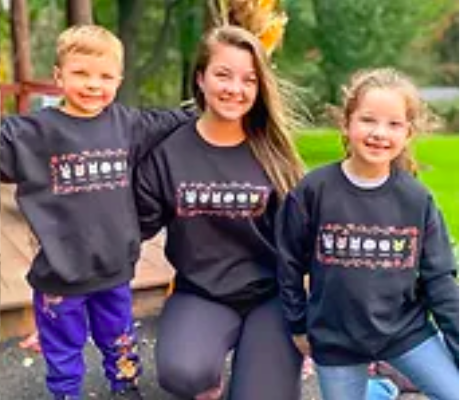

WHO WE ARE
About Us
Hi everyone, my name’s Kimberly. My family and I live in Upstate New York, which is where I run my home-based wildlife rescue. I’ve been volunteering my time working with and raising rescued wildlife and exotic pets since 2012.
I possess both federal USDA and NYS DEC licenses, which allow me to legally work with these animals.
In 2020, my rescue efforts had grown enough that I decided to take the leap to found a nonprofit, and that’s when Arctic Fox Daily Wildlife Rescue Inc. was born.
All of our non-releasable permanent residents were either born in captivity or have a permanent disability that would prevent them from surviving and thriving in the wild. We love sharing a look into the behaviors and lives of these beautiful animals, enjoy helping people learn about the realities of exotic pet ownership (foxes really don’t make good pets), and enjoy furthering conservation efforts through education.
Rescuing these animals is time-consuming, many times heartbreaking, but most of all - it’s incredibly rewarding! The feeling associated with A) being able to provide forever sanctuary to an animal who’d otherwise have been euthanized and B) opening up an enclosure door and allowing a rehabilitated animal to take its place back in nature is so unique and special.
As of September 2020, we are officially a 501(c)(3) non-profit organization! We are so excited about having taken this big step, and know that it will ultimately help us help more animals! This means that members of the public and businesses can now make tax-deductible donations to our rescue. Learn more about different ways to do so on the contribute page of our website.
We are personally responsible for all costs associated with our rescue efforts and receive no funding from the government. We rely on donations, grants, gifts from our wish list, or money out of our own pockets. No contribution is ever too small - thank you for your support!
Our Mission
Two-part rescue mission at Arctic Fox Daily:
1. Provide forever sanctuary to captive-bred unwanted, neglected,
abandoned, non-releasable wildlife, specializing in foxes and wolfdogs.
2. Practice wildlife rehabilitation: We rescue, raise,
and release orphaned, New York-native wildlife.
Our Goal
The end goal of wildlife rehabilitation is always to allow the animal to take its place back in nature.